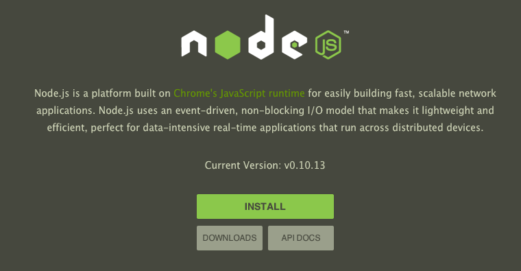

Lets Harnes The Power of NodeJS
NodeJS
What is nodejs?
Node.js is a server-side software system designed for writing scalable Internet applications, notably web servers.
Programs are written on the server side in JavaScript, using event-driven, asynchronous I/O to minimize overhead and maximize scalability.
In Short
It's completely Badass!
Node allows for a complete webserver to be run on JavaScript!
Apache || Lighthttpd need not apply
Node is single threaded and relies heavily on callbacks
History Lesson
NodeJS first made its public appearnce in Berlin 2009 when Ryan Dahl presented "Node.js, Evented I/O for V8 Javascript" @ JSconf.
Watch this later!
Under the Hood

Node is running on top of Google's V8 Engine and is currently written in C++/JS. With the goal of the software to become more and more JavaScript as the code matures.
Today
Node is sponsored by Joyent

Ryan has taken a step back from Node and Isaac Schlueter (Author of NPM) is the current "gatekeeper" of the project.
Installing Node
There are many methods of installing Node
- homebrew
- PKG from nodejs.org
- Github
- Plus many more
Since Node updates so frequently there are many ways to control the version you are developing with.
Example: npm n
Demo
Installation
Hello World
Code Example:
var http = require('http');
http.createServer(function (req, res) {
res.writeHead(200, {'Content-Type': 'text/plain'});
res.end('Hello World\n');
}).listen(1337, '127.0.0.1');
console.log('Server running at http://127.0.0.1:1337/');
DEMO HELLO NODE
NPM
NPM stands for Node Packet Manager
Basically the sugar that makes Node easy to prototype applications with.
If you're familar with Ruby Gems, NPMs are very similar.

The npmjs.org home of public NPMs.
Working With NPMs
Demo
- Installing Npms
- Creating package.json
- Saving NPMs to package.json
- npm start
- Many more options found here: NPM Scripts
Restful API
With node you can quickyl leverage Restful APIs
$npm install table-topRest API Demo

Streams
The nice thing about streams in Node is they work like everything else: they’re asynchronous and event-based.
They are based on Unix Pipes, created by Doug Mcilroy in 1964.
Types of Common Stream
- Read Steams
- Write Streams
- Through Streams
- Duplex Streams
- JSON Stream
One Million Lines of Code
Stream Demo